⬡ LocalNet Manager v4
A self-hosted, browser-based control panel for managing a private LAN — DNS, reverse proxy, DHCP, SSL certificates, ad blocking, backups, and live logs — all from a single Python script.
📑 Table of Contents
📖 Introduction
LocalNet Manager is a single-file Python web application that turns any Linux machine into a fully managed home or office network infrastructure server. Instead of manually editing /etc/bind/ zone files, writing Nginx reverse-proxy configs, or remembering certbot flags, every operation is exposed through a clean browser UI running on port 8091.
The application is intentionally dependency-light: it ships as one .py file, relies only on Flask (a Python micro-framework), and drives all real work through shell scripts executed as root via subprocess. Every destructive operation is preceded by an automatic ZIP backup of /etc/bind and /etc/nginx so recovery is always one click away.
root. Launch with sudo python3 localnet_v4_alpha_b.py. The UI will show a warning and disable write operations if run as a non-root user.What problem does it solve?
Self-hosters running services like Home Assistant, Nextcloud, Jellyfin, or Gitea on a local server typically need:
- Custom DNS names like
nas.localnetordash.localnetinstead of bare IP addresses - Nginx reverse proxy so multiple services share port 80/443
- Local HTTPS without browser warnings — via
mkcertor Let's Encrypt - Network-wide ad blocking without a separate Pi-hole
- DHCP so devices get addresses automatically and the DNS server is injected
LocalNet Manager automates all of this from a single web interface.
✨ Features
localnet.🏗 Architecture
LocalNet Manager is deliberately stateless at the application layer. All real configuration lives in system files (/etc/bind/, /etc/nginx/, etc.). The app reads those files on every request and writes them via Bash scripts executed by subprocess as root.
┌──────────────────── Browser ────────────────────────┐
│ http://<server>:8091 │
│ Vanilla JS SPA ←──SSE log stream──→ Flask App │
└────────────────────────┬────────────────────────────┘
│ REST API (JSON)
▼
┌───────────────── Flask (Python 3) ──────────────────┐
│ Auth │ Config │ Script Runner │ SSE Queue │
│ ├─ session-based login │ │
│ ├─ /etc/localnet/config.json │ │
│ ├─ /etc/localnet/localnet.db │ │
│ └─ threading.Thread (bash scripts) │ │
└──────────┬──────────────────────────┘
│ subprocess.Popen
▼
┌──────────────── System Services ────────────────────┐
│ BIND9 (named) /etc/bind/ │
│ Nginx /etc/nginx/sites-{available,enabled}
│ ISC-DHCP-Server /etc/dhcp/dhcpd.conf │
│ mkcert / certbot /etc/localnet/certs/ │
│ systemd-resolved /etc/systemd/resolved.conf.d/ │
└─────────────────────────────────────────────────────┘Key source modules (within single file)
| Section | Lines | Responsibility |
|---|---|---|
Config | 52–69 | Load/save /etc/localnet/config.json with fallback to /tmp |
Auth Helpers | 79–106 | SHA-256 password hashing, HMAC compare, Flask session guard decorator |
SQLite DB | 108–182 | Record notes, proxy notes, backup history (3 tables) |
Logging | 184–194 | In-memory ring buffer (1000 entries) + fan-out to SSE subscriber queues |
Helpers | 196–296 | IP detection, interface enumeration, zone file parser, proxy lister |
Backup System | 298–336 | ZIP /etc/bind + /etc/nginx; restore by extracting to / |
Script Runner | 338–369 | Writes Bash to /tmp/_localnet_v4.sh, runs in daemon thread, pipes output to log |
Nginx Templates | 371–506 | 5 config templates rendered with plain .replace() |
API Routes | 508–1522 | All REST endpoints (see API Reference) |
HTML_PAGE | 1524–3197 | Entire frontend as an embedded Python string (SPA) |
LOGIN_PAGE | 3199–3245 | Standalone login HTML |
Concurrency model
Flask runs with threaded=True. Every shell script runs in a daemon thread so HTTP requests return immediately with {"ok": true} while the script executes in the background. Progress is streamed back to the browser via the SSE log endpoint (/api/logs/stream) using a per-client queue.Queue.
DNS resolution chain (VPN-compatible mode)
resolv.conf → 127.0.0.53 (systemd-resolved stub)
├── *.localnet → 127.0.0.1 (BIND9) ✔ local names
└── everything else → upstream / VPN DNS ✔ VPN worksIn non-VPN mode, resolv.conf points directly to BIND9 at the server LAN IP with forward only, which is simpler but breaks VPN DNS injection.
📋 Requirements
Host system
| Requirement | Details |
|---|---|
| OS | Ubuntu 22.04+ or Debian 12+ (uses apt-get, systemctl, journalctl) |
| Python | 3.10+ (uses str | None union type hints in internal helpers) |
| Privilege | Must run as root (sudo) for all write operations |
| Network | Static LAN IP strongly recommended; the detected IP is baked into BIND9 config |
| Internet | Required during service installation (apt-get, mkcert download, StevenBlack list) |
Python dependencies
# Runtime (auto-installed by pip)
flask # Web framework — only external dependency
# Standard library (no install needed)
os, sys, json, glob, socket, subprocess, threading, re, time, base64
hashlib, secrets, sqlite3, zipfile, functools, hmac
queue.Queue, pathlib.Path, datetimeSystem packages installed on demand
| Package | Installed when |
|---|---|
bind9 bind9utils dnsutils | DNS → Install DNS Server |
nginx | Nginx Proxy → Install / Remove → Install Nginx |
isc-dhcp-server | DHCP → Install & Configure DHCP |
libnss3-tools wget + mkcert binary | SSL / TLS → Install mkcert |
certbot python3-certbot-dns-rfc2136 | SSL / TLS → Let's Encrypt → Install Certbot |
⚡ Installation
sudo apt-get update
sudo apt-get install -y python3 python3-pip
pip3 install flasksudo cp localnet_v4_alpha_b.py /usr/local/bin/localnet
sudo chmod +x /usr/local/bin/localnetsudo python3 /usr/local/bin/localnetYou will see startup output including the web UI URL and detected server IP.
http://<your-server-ip>:8091Or http://localhost:8091 if on the same machine.
# /etc/systemd/system/localnet.service
[Unit]
Description=LocalNet Manager v4
After=network.target
[Service]
ExecStart=/usr/bin/python3 /usr/local/bin/localnet
Restart=on-failure
User=root
[Install]
WantedBy=multi-user.targetsudo systemctl daemon-reload
sudo systemctl enable --now localnet/tmp/localnet_v4/ and the SQLite database in the same location. All write operations that require root will return HTTP 403.🔑 First Login
On first run, navigate to http://<server>:8091. You will be redirected to the login page.
localnet. Change it immediately via Settings → Change Password. The password is stored as a SHA-256 hash in /etc/localnet/config.json.After logging in:
- Navigate to Settings and change the password.
- Verify your server IP is detected correctly in the Network page.
- Go to DNS → Setup and install BIND9 with your chosen TLD (default:
localnet). - Add an A record for your server in DNS → Records.
- Install Nginx via Nginx Proxy → Install / Remove, then add your first proxy.
🖥 Dashboard
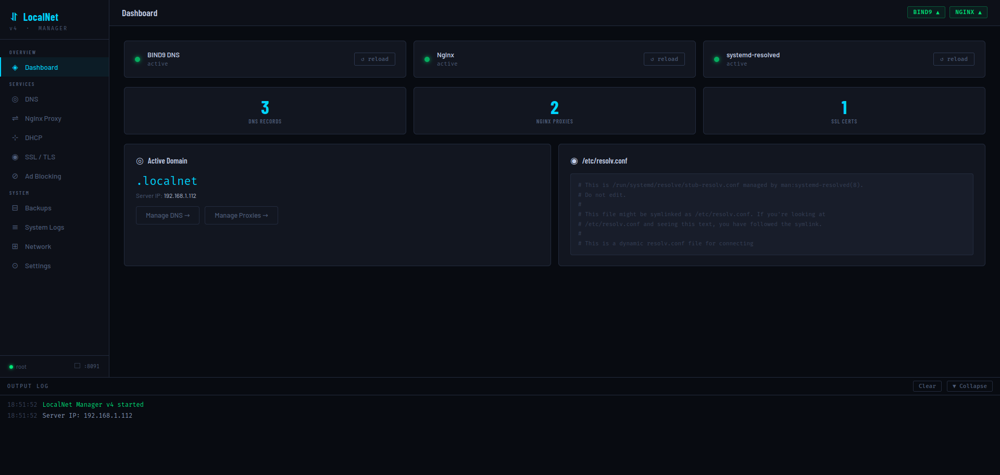
The dashboard provides a live overview of the entire stack. It polls GET /api/status every 8 seconds and the service status indicators in the top-right corner (BIND9 / NGINX) update in real time.
Dashboard widgets
| Widget | Data source | Description |
|---|---|---|
| BIND9 DNS | systemctl is-active bind9 | Green dot = active. "reload" button calls POST /api/service/reload |
| Nginx | systemctl is-active nginx | Same as above for Nginx |
| systemd-resolved | systemctl is-active systemd-resolved | Status + reload button |
| DNS Records | Count of A/CNAME/TXT entries in zone file | Links to DNS → Records |
| Nginx Proxies | Count of sites in /etc/nginx/sites-enabled/ | Links to Nginx Proxy |
| SSL Certs | Count of *.pem files in /etc/localnet/certs/ | Links to SSL / TLS |
| Active Domain | cfg.domain from config.json | Shows TLD + server IP |
| /etc/resolv.conf | First 300 chars of the file | Read-only preview |
Output log panel
The collapsible log panel at the bottom of every page shows real-time output from the SSE stream (GET /api/logs/stream). It displays the last 80 historical entries on connect, then streams new entries as scripts execute. Log entries are color-coded: success, error, and plain info.
🌐 DNS Server
The DNS section has three tabs: Setup, Records, and Test.
Setup tab
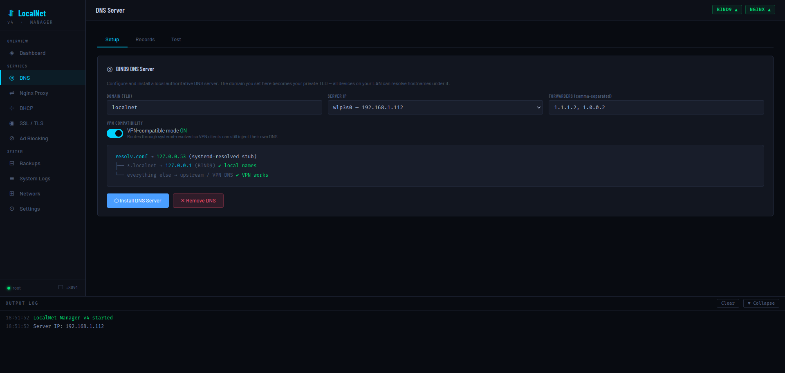
Configures and installs BIND9. The install script performs 8 steps:
- Installs
bind9 bind9utils dnsutilsvia apt-get - Writes
/etc/bind/named.conf.options(ACL, recursion, forwarders, DNSSEC) - Writes
/etc/bind/named.conf.local(forward and reverse zone declarations) - Writes the forward zone file (
/etc/bind/db.{domain}) with SOA, NS, and ns1 A record - Writes the reverse zone file (
/etc/bind/db.{octet1}.{octet2}.{octet3}) - Validates with
named-checkconf+named-checkzoneand starts/enablesnamed - Writes
/etc/systemd/resolved.conf.d/localnet.confto route~domainthrough BIND9 - Symlinks
/etc/resolv.conf→ systemd-resolved stub and flushes caches
| Field | Default | Notes |
|---|---|---|
| Domain (TLD) | localnet | Your private top-level domain. All records live under .localnet |
| Server IP | Auto-detected | Dropdown of non-loopback IPv4 interfaces. Used as BIND9's listen-on address |
| Forwarders | 1.1.1.2, 1.0.0.2 | Comma-separated upstream resolvers for non-local queries |
| VPN-compatible mode | ON | Routes through systemd-resolved stub; allows VPN to inject its own DNS |
Records tab
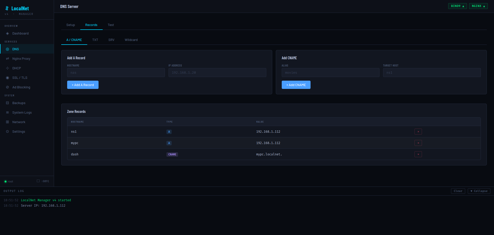
Four record sub-tabs are available:
| Sub-tab | Record type | Fields |
|---|---|---|
| A / CNAME | A and CNAME | Hostname + IP (A) or Alias + Target (CNAME) |
| TXT | TXT | Hostname + value (auto-quoted). Used for SPF, DKIM, verification strings |
| SRV | SRV | Service, Proto, Priority, Weight, Port, Target — e.g. _http._tcp |
| Wildcard | A with * host | IP only. Routes all unmatched subdomains to the given IP |
Every add/delete operation appends or removes lines from the zone file, bumps the serial to $(date +%s), runs named-checkconf, and calls systemctl reload named. Reverse-zone PTR records are also updated automatically when adding/removing A records.
Test tab
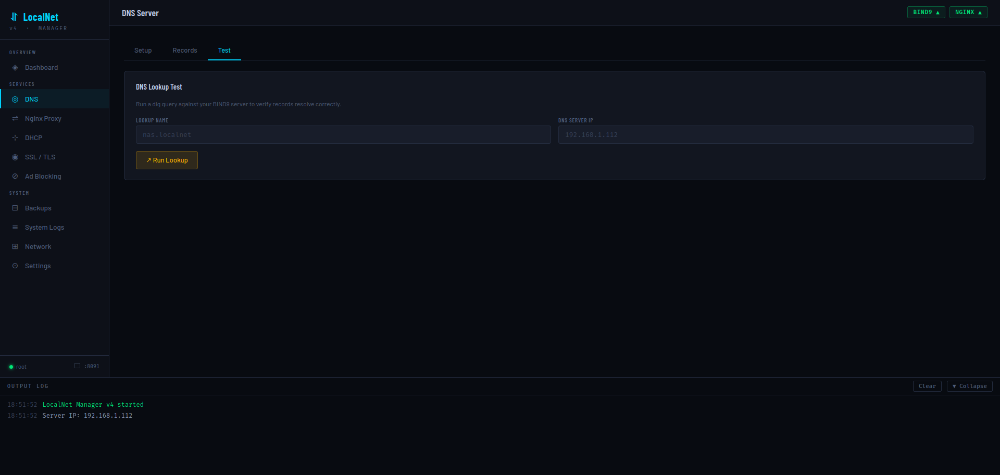
Runs dig @{server} {name} +short +time=2 and returns the result. Enter a hostname like nas.localnet to verify it resolves correctly. The DNS server IP field defaults to the detected server IP.
↔ Nginx Reverse Proxy
Proxies tab
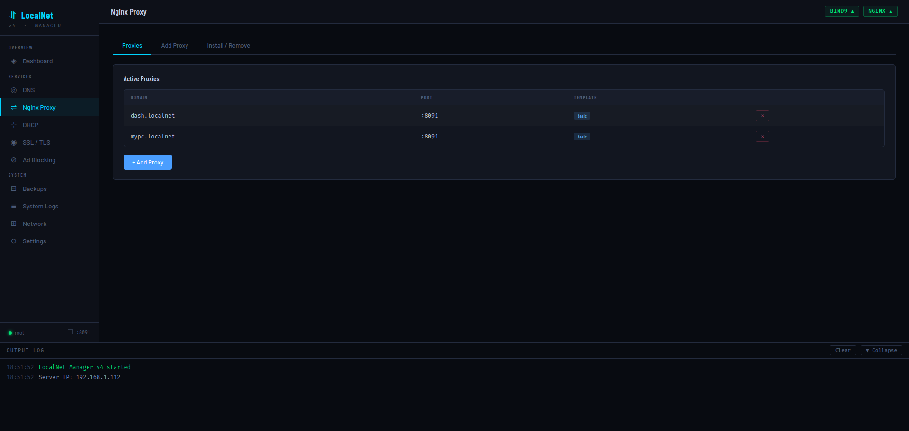
Lists all active proxies by reading symlinks in /etc/nginx/sites-enabled/ (excluding default) and parsing the config for proxy_pass port and the # template: comment. Each proxy row shows domain, upstream port, and template badge, with a delete button that removes both the sites-available file and its symlink.
Add Proxy tab
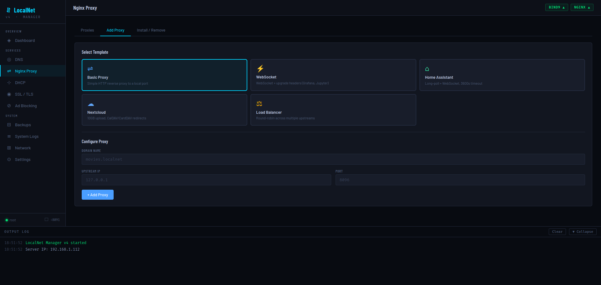
Select a template card, then fill in Domain Name (e.g. movies.localnet), Upstream IP (usually 127.0.0.1), and Port. The generated config is written to /etc/nginx/sites-available/{domain}, symlinked to sites-enabled/, validated with nginx -t, and reloaded.
📡 DHCP Server
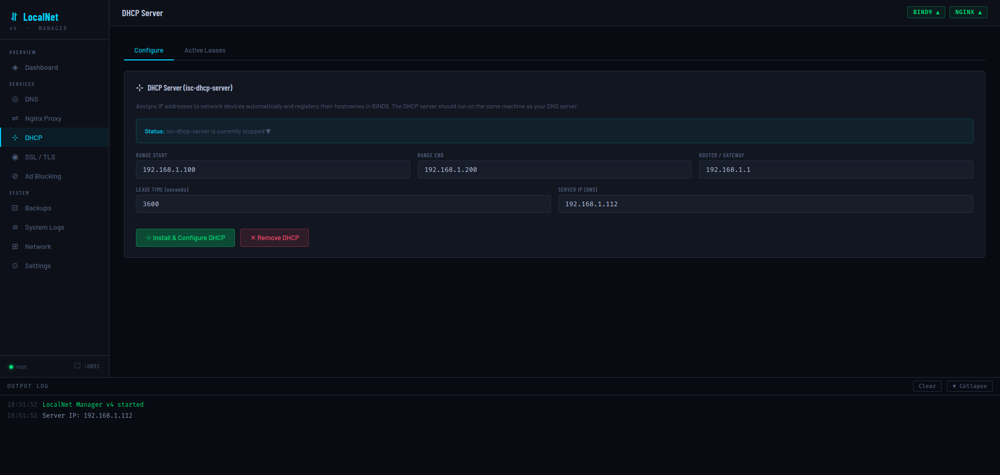
Installs and configures ISC-DHCP-Server (isc-dhcp-server). When enabled, network devices will receive their IP address from this server along with the LocalNet DNS server IP, making all .localnet hostnames resolve automatically on every device without manual configuration.
| Field | Default | Notes |
|---|---|---|
| Range Start | 192.168.1.100 | First IP in the DHCP pool. Derived from server IP subnet |
| Range End | 192.168.1.200 | Last IP in the DHCP pool |
| Router / Gateway | 192.168.1.1 | Injected as option routers. Should be your router's IP |
| Lease Time (seconds) | 3600 | Default lease; max lease is automatically set to 2× this value |
| Server IP (DNS) | Auto-detected | The LocalNet server's IP — pushed to all DHCP clients as their DNS resolver |
The Active Leases tab reads /var/lib/dhcp/dhcpd.leases, parses all blocks with binding state active, and displays IP address, MAC, hostname, and expiry time for each current lease.
🔒 SSL / TLS
Two approaches to HTTPS certificates are provided, each on its own sub-tab.
mkcert (Local CA) tab
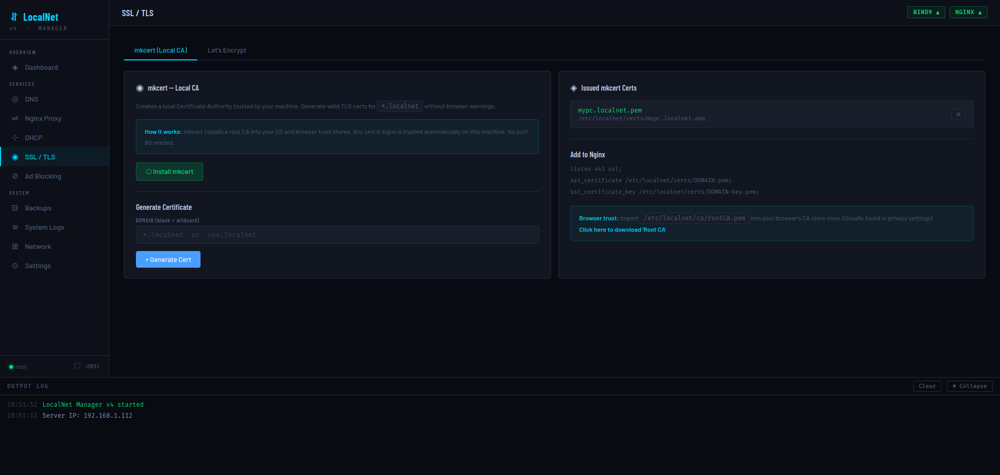
mkcert creates a local Certificate Authority that is trusted by the machine that installs it. Any cert it signs is trusted automatically — no port 80 needed, works entirely offline.
mkcert -install. CA files are stored in /etc/localnet/ca/.mypc.localnet) or leave blank for a wildcard (*.localnet). The cert is generated with three SANs: the entered domain, *.{tld}, and {tld} — stored in /etc/localnet/certs/.listen 443 ssl; and the cert/key paths, then reloads Nginx./etc/localnet/ca/rootCA.pem into each device's browser/OS certificate store.Let's Encrypt tab
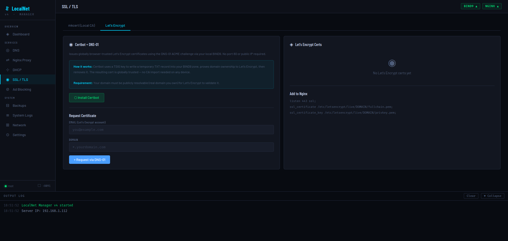
Issues globally browser-trusted Let's Encrypt certificates using the DNS-01 ACME challenge via your local BIND9 server. This means no port 80 or public IP is required — Certbot writes a temporary TXT record into your BIND9 zone, proves domain ownership, then removes it.
*.yourdomain.com) and have its NS records pointing somewhere public. This tab does not work with private .localnet TLDs.The implementation generates a TSIG key (tsig-keygen), writes an rfc2136.ini credentials file, and runs certbot certonly --dns-rfc2136. The resulting cert appears in /etc/letsencrypt/live/{domain}/.
🚫 Ad Blocking
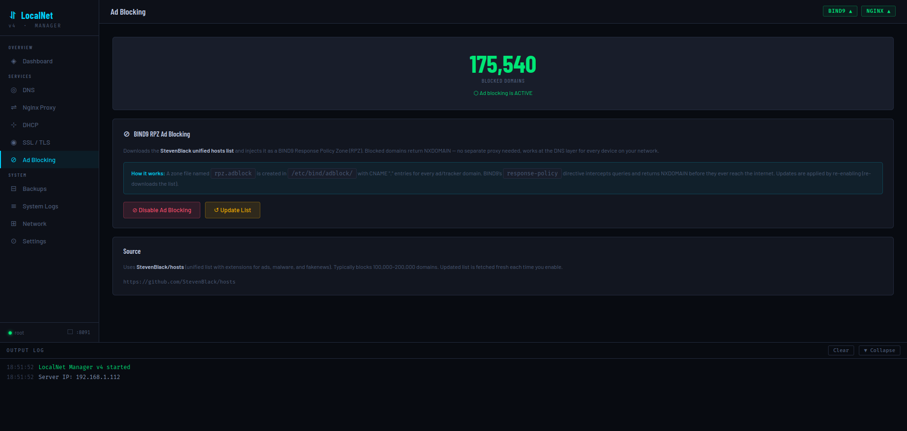
Network-wide ad blocking implemented entirely at the DNS layer using BIND9's Response Policy Zone (RPZ) feature. No separate proxy or additional software is needed.
How it works
- Downloads the StevenBlack unified hosts list (100,000–200,000 ad/tracker/malware domains)
- Builds a BIND9 RPZ zone file at
/etc/bind/adblock/db.rpz.adblockwithCNAME .entries for every domain (and its wildcard) - Declares the zone in
named.conf.localand adds aresponse-policydirective tonamed.conf.options - Reloads BIND9 — blocked domains return NXDOMAIN to all clients on the network instantly
The current entry count is read live from the zone file by counting CNAME occurrences. Click Update List to re-download and regenerate the zone with the latest blocklist.
💾 Backups & Restore
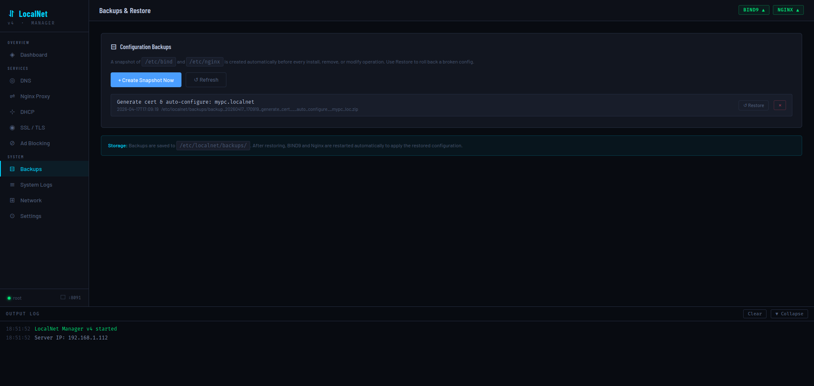
Before every install, remove, or modify operation, LocalNet Manager automatically creates a ZIP snapshot of /etc/bind and /etc/nginx. Backups are stored in /etc/localnet/backups/ and logged to the SQLite database.
Backup file naming
backup_{YYYYMMDD}_{HHMMSS}_{sanitized_label}.zip
Example:
backup_20280417_170918_generate_cert___auto_configure__mypc_loc.zipOperations
| Action | Behavior |
|---|---|
| Create Snapshot Now | Manually trigger a backup with label "manual" |
| Restore | Extracts the ZIP to /, then restarts BIND9 and Nginx automatically |
| Delete | Removes the ZIP file and its database record |
| Refresh | Rescans the backup directory for any ZIPs not in the database |
📜 System Logs
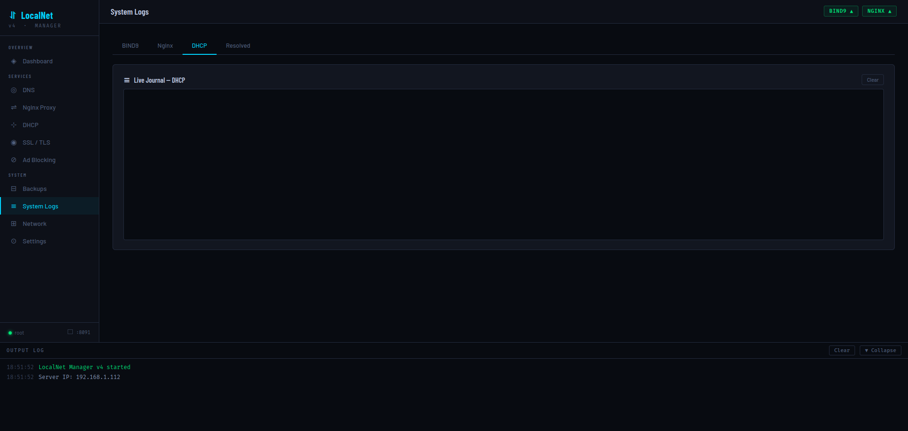
Streams journalctl -fu {service} output live via Server-Sent Events. Available log tabs:
| Tab | journalctl unit |
|---|---|
| BIND9 | named |
| Nginx | nginx |
| DHCP | isc-dhcp-server |
| Resolved | systemd-resolved |
The stream starts with the last 100 journal lines, then follows new entries in real time. Navigation away from the Logs page automatically kills the SSE connection via the overridden navigate() function.
🔌 Network Interfaces
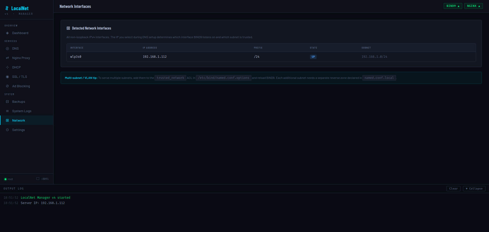
Displays all non-loopback, non-Docker, non-bridge IPv4 network interfaces detected via ip -j addr. Shows interface name, IP address, prefix length, state (UP/DOWN), and computed subnet.
The multi-subnet tip at the bottom explains how to add additional subnets to the BIND9 trusted_network ACL for multi-VLAN environments.
⚙ Settings
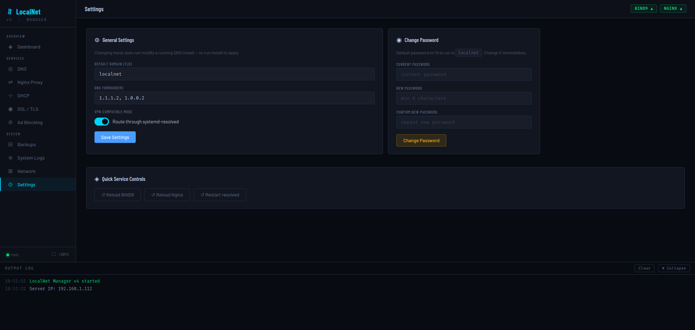
General Settings
Saved to /etc/localnet/config.json but do not apply to a running DNS install — re-run Install DNS Server to apply domain or forwarder changes.
| Setting | Key | Default |
|---|---|---|
| Default Domain (TLD) | domain | localnet |
| DNS Forwarders | forwarders | ["1.1.1.2","1.0.0.2"] |
| VPN-Compatible Mode | vpn_safe | true |
Change Password
Requires the current password. New password must be at least 6 characters. Stored as hashlib.sha256(pw.encode()).hexdigest() in config.json under the key password_hash.
Quick Service Controls
Reload BIND9, Reload Nginx, or Restart systemd-resolved without leaving the page. These call POST /api/service/reload with the service name.
🔐 API — Auth
All API endpoints (except GET /login and POST /login) require an active session cookie. Unauthenticated requests to /api/* return HTTP 401 {"error":"Unauthorized"}. Non-API routes redirect to /login.
Form data: password (string)
Validates against stored SHA-256 hash (or default localnet on first run). On success, sets session["authed"] = True and redirects to /. On failure, re-renders login page with error.
Calls session.clear() and redirects to /login.
Body:
{ "current": "oldpassword", "new": "newpassword" }Returns 403 if current password is wrong. Returns 400 if new password is shorter than 6 characters. On success, updates password_hash in config.json.
{ "ok": true }📊 API — Status & Config
Returns service states (via systemctl is-active), record/proxy/cert counts, server IP, domain, and the first 300 chars of /etc/resolv.conf.
{
"services": { "bind9": "active", "nginx": "active", "systemd-resolved": "active" },
"record_count": 3,
"proxy_count": 2,
"cert_count": 1,
"resolv": "# This is /run/systemd/resolve/stub-resolv.conf...",
"is_root": true,
"server_ip": "192.168.1.112",
"domain": "localnet"
}{
"domain": "localnet",
"vpn_safe": true,
"server_ip": "192.168.1.112",
"forwarders": ["1.1.1.2", "1.0.0.2"],
"adblock_enabled": false,
"interfaces": [{ "name": "wlp3s0", "ip": "192.168.1.112", "prefix": 24, "state": "UP" }]
}Body: Any subset of config keys (domain, forwarders, vpn_safe). Only keys present in DEFAULT_CONFIG are merged.
{ "ok": true }Returns all non-loopback, non-Docker IPv4 interfaces as parsed by ip -j addr.
[{ "name": "wlp3s0", "ip": "192.168.1.112", "prefix": 24, "state": "UP" }]Body:
{ "service": "bind9" }Allowed values: bind9 (reload), nginx (reload), systemd-resolved (restart). Returns 400 for any other value.
🌐 API — DNS
Body:
{
"domain": "localnet",
"server_ip": "192.168.1.112",
"vpn_safe": true,
"forwarders": ["1.1.1.2", "1.0.0.2"]
}Runs an 8-step bash install script asynchronously. Progress streams through /api/logs/stream.
Stops and purges bind9 bind9utils bind9-doc dnsutils, removes /etc/bind and the resolved drop-in config, restarts systemd-resolved.
Parses /etc/bind/db.{domain} and returns A, CNAME, MX, TXT, AAAA records (excludes SOA/NS/@).
[
{ "host": "ns1", "type": "A", "value": "192.168.1.112" },
{ "host": "mypc", "type": "A", "value": "192.168.1.112" },
{ "host": "dash", "type": "CNAME", "value": "mypc.localnet." }
]{ "host": "nas", "ip": "192.168.1.20" }Appends nas IN A 192.168.1.20 to the zone file, appends a PTR record to the reverse zone, bumps serial, and reloads BIND9.
{ "alias": "movies", "target": "nas" }Creates movies.localnet → nas.localnet.
{ "host": "_dmarc", "value": "v=DMARC1; p=none" }Value is automatically wrapped in double quotes if not already present.
{
"service": "_http",
"proto": "_tcp",
"priority": 10,
"weight": 5,
"port": 8080,
"target": "mypc"
}Writes: _http._tcp IN SRV 10 5 8080 mypc.localnet.
{ "ip": "192.168.1.112" }Writes: * IN A 192.168.1.112 — all unmatched subdomains resolve to this IP.
Runs sed -i '/^{host}/d' on the forward zone and removes the matching PTR entry from the reverse zone. Bumps serial and reloads.
{ "name": "nas.localnet", "server": "192.168.1.112" }Runs dig @{server} {name} +short +time=2. Returns:
{ "result": "192.168.1.20", "ok": true }{ "host": "nas", "note": "My NAS server" }Stored in SQLite record_notes table keyed by (host, domain).
↔ API — Nginx
Runs apt-get install -y nginx, removes the default site, and enables the service.
Stops, purges nginx nginx-common nginx-full, and removes /etc/nginx and /var/log/nginx.
[
{ "domain": "dash.localnet", "port": "8091", "template": "basic" },
{ "domain": "mypc.localnet", "port": "8091", "template": "basic" }
]{
"domain": "movies.localnet",
"template": "basic",
"upstream_ip": "127.0.0.1",
"port": "8096",
"extras": {}
}For the loadbalancer template, pass "extras": { "upstreams": "192.168.1.10:8080\n192.168.1.11:8080" }.
Deletes /etc/nginx/sites-available/{domain} and its symlink in sites-enabled/, then reloads Nginx.
{
"basic": { "label": "Basic Proxy", "desc": "Simple HTTP reverse proxy", "icon": "⇌", "color": "#4a9eff" },
"websocket": { "label": "WebSocket", "desc": "WebSocket-capable (Grafana, Jupyter, etc.)", ... },
"homeassistant": { "label": "Home Assistant", "desc": "Long-poll + WebSocket for HA", ... },
"nextcloud": { "label": "Nextcloud", "desc": "Large uploads, CalDAV/CardDAV", ... },
"loadbalancer": { "label": "Load Balancer", "desc": "Round-robin multiple upstreams", ... }
}{ "domain": "movies.localnet", "note": "Jellyfin media server" }Stored in SQLite proxy_notes table keyed by domain.
📡 API — DHCP
{
"server_ip": "192.168.1.112",
"router": "192.168.1.1",
"range_start": "192.168.1.100",
"range_end": "192.168.1.200",
"lease_time": 3600
}All fields are optional with sensible defaults derived from the detected server IP.
Stops, disables, and purges isc-dhcp-server.
Parses /var/lib/dhcp/dhcpd.leases. Returns only leases with binding state active.
[{ "ip": "192.168.1.105", "mac": "aa:bb:cc:dd:ee:ff", "hostname": "laptop", "starts": "2028/04/17 17:00:00", "ends": "2028/04/17 18:00:00", "state": "active" }]{ "active": true }🔒 API — SSL / TLS
Downloads the latest mkcert binary for the system architecture, places it at /usr/local/bin/mkcert, and runs CAROOT=/etc/localnet/ca mkcert -install to create and trust the local CA.
{ "domain": "mypc.localnet" }If domain is blank or omitted, defaults to the configured TLD (effectively a wildcard). The cert is signed with three SANs: {domain}, *.{tld}, {tld}. Files are saved to /etc/localnet/certs/{domain}.pem and {domain}-key.pem. Automatically injects SSL config into a matching Nginx site if found.
[{ "name": "mypc.localnet", "path": "/etc/localnet/certs/mypc.localnet.pem" }]Removes the .pem and -key.pem files, then strips listen 443 ssl; and all ssl_* directives from the matching Nginx site config and reloads.
Serves /etc/localnet/ca/rootCA.pem as a download named LocalNet-Root-CA.pem. Returns 404 if mkcert hasn't been installed yet.
Installs certbot and python3-certbot-dns-rfc2136 via apt-get.
{ "email": "you@example.com", "domain": "*.yourdomain.com" }Generates a TSIG key, writes /etc/localnet/certbot/rfc2136.ini, and runs certbot certonly --dns-rfc2136. The certificate is placed in /etc/letsencrypt/live/{domain}/.
[{ "name": "yourdomain.com", "cert": "/etc/letsencrypt/live/yourdomain.com/fullchain.pem", "key": "/etc/letsencrypt/live/yourdomain.com/privkey.pem", "exists": true }]🚫 API — Ad Blocking
Downloads https://raw.githubusercontent.com/StevenBlack/hosts/master/hosts, builds a BIND9 RPZ zone file, configures BIND9, and reloads. Sets adblock_enabled: true in config.json.
Removes the zone declaration from named.conf.local, removes the response-policy line from named.conf.options, deletes /etc/bind/adblock/, and reloads BIND9.
{ "enabled": true, "entry_count": 350880 }entry_count is read live from the RPZ zone file by counting CNAME occurrences (each blocked domain has two entries: itself and its wildcard).
💾 API — Backups
[{ "id": 1, "path": "/etc/localnet/backups/backup_20280417_170918_generate_cert.zip", "label": "Generate cert & auto-configure: mypc.localnet", "created_at": "2028-04-17T17:09:18" }]Merges SQLite records with a filesystem scan — ZIPs present on disk but missing from the DB are included.
{ "label": "pre-migration" }{ "ok": true, "path": "/etc/localnet/backups/backup_20280417_171000_pre_migration.zip" }{ "path": "/etc/localnet/backups/backup_20280417_171000_pre_migration.zip" }Extracts the ZIP to / (restoring both /etc/bind and /etc/nginx), then restarts BIND9 and Nginx asynchronously.
{ "path": "/etc/localnet/backups/backup_20280417_171000_pre_migration.zip" }Deletes the ZIP file and removes the database record.
📜 API — Logs
Content-Type: text/event-stream
Replays the last 80 log entries from the in-memory ring buffer (max 1000 entries), then streams new entries as they are produced. Sends a ping event every 20 seconds to keep the connection alive. Each event is a JSON object:
data: {"t": "18:51:52", "msg": "LocalNet Manager v4 started", "level": "success"}
data: {"type": "ping"}level values: info, success, error.
Query params:
service: one ofbind9,nginx,dhcp,resolved(default:bind9)tail: number of historical lines to show (default:100)
Runs journalctl -fu {unit} --no-pager -n {tail} --output=short as a subprocess and streams each line as:
data: {"msg": "Apr 17 18:51:52 named[1234]: zone localnet/IN: loaded serial 1713376312"}The subprocess is killed when the SSE connection closes.
📄 Configuration File
Stored at /etc/localnet/config.json (falls back to /tmp/localnet_v4/ when not root).
{
"domain": "localnet", // Private TLD for all DNS records
"vpn_safe": true, // Route through systemd-resolved stub
"server_ip": "192.168.1.112", // Auto-detected; baked into BIND9 config
"forwarders": ["1.1.1.2", "1.0.0.2"], // Cloudflare for Families (default)
"password_hash": "sha256hex...", // SHA-256 of web UI password
"secret_key": "hex64...", // Flask session secret (auto-generated)
"adblock_enabled":false // Persisted adblock toggle state
}Important paths
| Path | Purpose |
|---|---|
/etc/localnet/config.json | Application configuration |
/etc/localnet/localnet.db | SQLite: notes, backup history |
/etc/localnet/certs/ | mkcert-issued certificates |
/etc/localnet/ca/ | mkcert local CA root |
/etc/localnet/backups/ | ZIP backup snapshots |
/etc/localnet/certbot/ | Certbot TSIG key and rfc2136.ini |
/etc/bind/db.{domain} | BIND9 forward zone file |
/etc/bind/named.conf.options | BIND9 global options (ACL, forwarders) |
/etc/bind/named.conf.local | BIND9 zone declarations |
/etc/bind/adblock/db.rpz.adblock | Ad blocking RPZ zone |
/etc/nginx/sites-available/ | Nginx proxy config files |
/etc/nginx/sites-enabled/ | Nginx active proxy symlinks |
/etc/dhcp/dhcpd.conf | ISC-DHCP-Server configuration |
/etc/systemd/resolved.conf.d/localnet.conf | systemd-resolved DNS routing |
/tmp/_localnet_v4.sh | Temporary script file for each operation |
📐 Nginx Proxy Templates
Templates are rendered with simple .replace() substitution (not f-strings) so Nginx variables like $host and $remote_addr are preserved literally.
basic
# template: basic
server {
listen 80;
server_name DOMAIN;
location / {
proxy_pass http://UPIP:PORT;
proxy_set_header Host $host;
proxy_set_header X-Real-IP $remote_addr;
proxy_set_header X-Forwarded-For $proxy_add_x_forwarded_for;
proxy_set_header X-Forwarded-Proto $scheme;
}
}websocket
# template: websocket — adds Upgrade headers and 24h timeouts
proxy_http_version 1.1;
proxy_set_header Upgrade $http_upgrade;
proxy_set_header Connection "upgrade";
proxy_read_timeout 86400;
proxy_send_timeout 86400;homeassistant
# template: homeassistant — WebSocket + dedicated /api/websocket location, 1h timeoutsnextcloud
# template: nextcloud — 10GB body size, CalDAV/CardDAV redirects, 5min timeouts, no buffering
client_max_body_size 10G;
proxy_request_buffering off;
location /.well-known/carddav { return 301 $scheme://$host/remote.php/dav; }
location /.well-known/caldav { return 301 $scheme://$host/remote.php/dav; }loadbalancer
# template: loadbalancer — upstream block with keepalive, round-robin by default
upstream {DOMAIN}_backend {
server 192.168.1.10:8080;
server 192.168.1.11:8080;
keepalive 32;
}
server { proxy_pass http://{DOMAIN}_backend; }The upstream name is derived from the domain with non-alphanumeric characters replaced by underscores.
🛡 Security Notes
Authentication implementation
- Password stored as
hashlib.sha256(pw.encode()).hexdigest()— not salted. Adequate for a single-user LAN tool, but not production-grade. - Comparison uses
hmac.compare_digest()to prevent timing attacks. - Flask secret key is a 64-character hex string generated with
secrets.token_hex(32)and persisted in config.json so sessions survive restarts. - All API endpoints except
/loginare guarded by@app.before_request → require_auth.
Shell injection considerations
All DNS hostnames, IPs, and domain values passed to shell scripts are inserted using Python f-strings. Values from user input are used directly in sed and echo commands. For extra safety, consider sanitizing inputs before submission — the UI performs basic client-side validation but the backend trusts the values it receives.
Backup security
Backups contain your full BIND9 and Nginx configuration. Store the /etc/localnet/backups/ directory securely or restrict access.
Self-hosting the UI over HTTPS
To serve the LocalNet Manager itself over HTTPS, generate a mkcert cert for dash.localnet (or your chosen name), then add an Nginx proxy pointing to localhost:8091 using the mkcert cert for TLS termination.
🔧 Troubleshooting
DNS names don't resolve from other devices
- Make sure DHCP is installed and configured with your LocalNet server's IP as the DNS server.
- Or manually set each device's DNS server to the LocalNet server IP.
- Verify with:
dig @192.168.1.112 nas.localnet +short
BIND9 fails to start after editing records
sudo named-checkconf
sudo named-checkzone localnet /etc/bind/db.localnetUse the Backups page to restore the last known-good configuration.
Nginx returns "502 Bad Gateway"
The upstream service is not running or the port is wrong. Verify the upstream: curl http://127.0.0.1:<port>.
mkcert cert not trusted in browser
You must import the Root CA (/etc/localnet/ca/rootCA.pem) into the browser's or OS's certificate store on each device that needs to trust the certs. The "Click here to download 'Root CA'" link on the SSL page serves this file directly.
Application shows "(Root: NO)" warning
The app was not started with sudo. Most write operations will return HTTP 403. Restart with: sudo python3 localnet_v4_alpha_b.py
Log stream disconnects frequently
The SSE stream sends a ping every 20 seconds. Reverse proxies with short read timeouts (e.g. Nginx default 60s) may close the connection. If running LocalNet Manager behind Nginx, add proxy_read_timeout 3600; to the proxy config.
Config saved in /tmp instead of /etc/localnet
Running without root. Configuration and database are stored in /tmp/localnet_v4/ and will be lost on reboot. Always run as root for persistent storage.